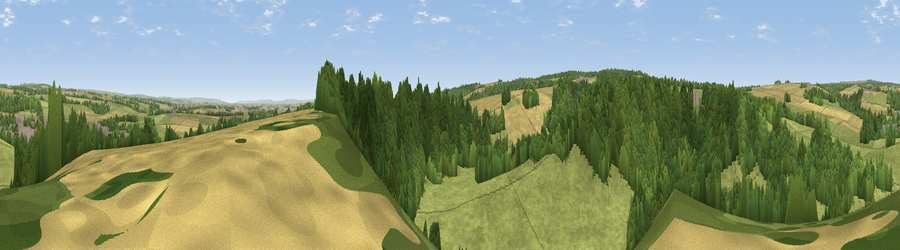

Viewpoint near Helmsley
#21973 in England · top 50% of its area beats it · near HelmsleyWhere it is
The exact computed spot (SE 61125 82875). Click the marker for map links.
The view, rendered

A 360° render of this exact spot computed from the terrain model, tree cover and land cover — summer colours, afternoon light, calibrated against photographs of famous viewpoints. Real trees, hedges and buildings will differ in detail.
The panorama
Grey silhouette: terrain skyline in each direction (720 bearings, Earth curvature and refraction included). Dashed green: skyline with trees (+15 m) and buildings (+8 m) as obstacles. Blue strip: how far the ground is visible on each bearing.
Where the view opens
Wedge length = distance to the farthest visible ground on that bearing (vegetation-aware). Rings at 10, 25 and 50 km.
What fills the view
47% grassland · 41% woodland · 10% cropland · 2% built-up
Angular shares of the visible panorama (visual magnitude), not map area. Landscape diversity 0.45 (0–1 Shannon).
Key numbers
More beautiful places nearby
The staircase of upgrades: each row has a higher view potential than everything closer. Driving times are estimates from straight-line distance, calibrated against real road routing — check an actual route before setting out.
| Place | Direction | Drive | Score |
|---|---|---|---|
| Viewpoint near Sproxton | SSW · 1 km | ~3 min | 53.1 |
| Viewpoint near Sproxton | SW · 1 km | ~4 min | 54.5 |
| Viewpoint near Sproxton | WSW · 2 km | ~5 min | 54.9 |
| Viewpoint near Sproxton | WSW · 2 km | ~6 min | 56.5 |
| Viewpoint near Oswaldkirk | S · 4 km | ~9 min | 65.9 |
| Viewpoint near Ampleforth | SSW · 4 km | ~9 min | 76.6 |
| Viewpoint near Kilburn | W · 10 km | ~19 min | 79.3 |
| Viewpoint near Thirlby | W · 10 km | ~20 min | 81.5 |
54.23793, -1.06366 · source: screening · position refined by local search. Computed location — check access rights before visiting.